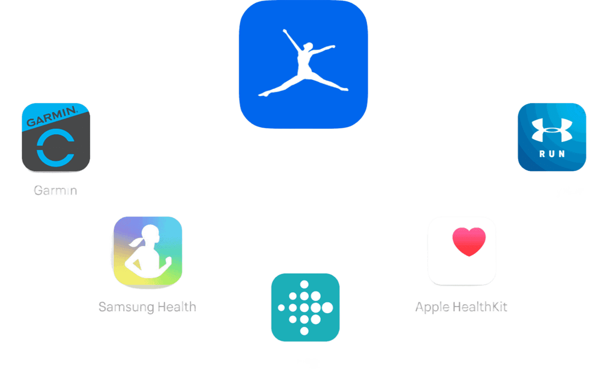

myfitnesspal
Uma boa saúde começa com o que você come.
Quer comer com mais atenção? Monitore refeições, aprenda sobre seus hábitos e alcance seus objetivos com o MyFitnessPal.
Comece gratuitamente

Registro de mais de 14 milhões de alimentos.
Veja um detalhamento de calorias e nutrientes, compare o tamanho das porções e descubra como os alimentos que você ingere apoiam seus objetivos.
As ferramentas para suas metas
Está tentando perder peso, tonificar o corpo, reduzir seu IMC ou investir em sua saúde de modo geral? Nós fornecemos os recursos certos para chegar lá.

Aprenda. Acompanhe. Melhore.
Manter um diário alimentar ajuda você a compreender seus hábitos, aumentando a probabilidade de atingir suas metas.

Registros simplificados.
Escaneie códigos de barras, salve refeições e receitas e usar ferramentas rápidas para um rápido e fácil acompanhamento alimentar.

Não perca a motivação.
Junte-se à maior Comunidade Fitness do mundo para obter conselhos, dicas e suporte em tempo integral.
Calcule seu IMC
Receitas e inspiração
Obtenha receitas aprovadas por nutricionistas e dicas motivacionais de treinos de especialistas do MyFitnessPal.


Conecte-se com mais de 50 aplicativos.
Vincule com facilidade sua conta do MyFitnessPal com aplicativos que oferecem suporte ao seu estilo de vida mais saudável. Não se trata apenas de calorias. Trata-se de se sentir melhor, melhorar sua aparência e viver bem.
